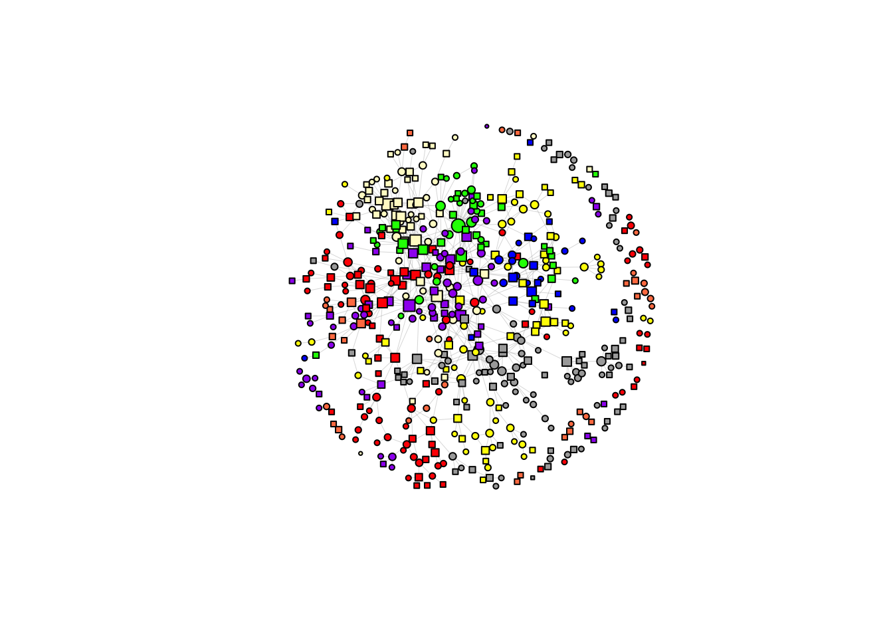

Descriptive Statistics
Getting Started
Functions
determine_complete_cases = function(data) {
# authors with valid OpenAlex id
has_oa = data[['scholars_oa']] |>
bind_rows() |>
filter(has_author_id) |>
distinct(uid) |> pull()
# authors with published works during observation period
has_work = data[['edge_table']] |>
filter(uid != a__uid) |>
distinct(uid) |> pull()
data[['demographics']] = data[['demographics']] |>
mutate(
flag = ifelse(
uid %in% has_work, 'is_complete',
ifelse(
uid %in% has_oa, 'no_works', 'no_oa'
)
),
is_staff = dplyr::if_all(
c(position_22, position_24, position_25),
~ is.na(.x) | (.x == "staff")
)
)
data[['nodes']] = data[['demographics']] |>
filter(flag == 'is_complete', !is_staff)
return(data)
}Application
select_sample_matrix = function(d0, sample){
# target: full samp x samp, default NA
d <- matrix(NA_real_, nrow = length(sample), ncol = length(sample),
dimnames = list(sample, sample))
# overlap between samp and existing d0 row/col names
r <- intersect(sample, rownames(d0))
c <- intersect(sample, colnames(d0))
keep <- intersect(r, c)
# copy existing values into the right positions
d[keep, keep] <- d0[keep, keep, drop = FALSE]
return(d)
}select_sample_intdis <- function(topics, sample){
t0 <- topics[["intdis"]][["subfield"]]
t <- matrix(NA_real_, nrow = length(sample), ncol = length(colnames(t0)),
dimnames = list(sample, colnames(t0)))
# fill rows that exist in original t0
keep <- intersect(sample, rownames(t0))
t[keep, ] <- t0[keep, , drop = FALSE]
return(t)
}select_sample = function (data, topics){
# set list with valid uids
sample <- data[['nodes']] |> distinct(uid) |> pull() |> sort()
# select valid works and scholars
data[['works']] = data[['works']][sample]
data[['scholars_oa']] = data[['scholars_oa']][sample]
data[['edge_table']] = data[['edge_table']] |> filter(uid %in% sample)
# prune distances matrices
years = c('2022', '2024', '2025')
for (year in years){
d0 = data[['distances']][[year]]
data[['distances']][[year]] = select_sample_matrix(d0, sample)
}
return(data)
}
select_sample_topics = function(samp, topics){
sample = samp[['nodes']] |> distinct(uid) |> pull() |> sort()
D = list()
years = c('2022', '2024', '2025')
for (year in years){
D[[year]] = topics[['dissim']][['subfield']][['2022']] |>
select_sample_matrix(sample)
}
samp[['dissim']] = D
samp[['intdis']] = topics |> select_sample_intdis(sample)
return(samp)
}
samp = data |>
select_sample() |>
select_sample_topics(topics)# step 2: prune works for selection
make_adjacency_matrix = function(
data, uids, type, min_year = 2020, max_year = 2026, weighted = FALSE
) {
# make edgelist from works
edges = data[['works']][uids] |> bind_rows() |>
filter(publication_year >= min_year, publication_year <= max_year) |>
select(uid, work_id, authorships, publication_year) |>
rename(e_uid = uid) |>
distinct(work_id, authorships, publication_year, .keep_all = TRUE) |>
unnest(authorships) |>
filter(e_uid != uid) |>
filter(uid %in% uids, e_uid %in% uids)
if (type != 'all') {
edges = edges |> filter(author_position != type)
}
# calculate the number of edges between ego and alters.
edge_counts = edges |> count(e_uid, uid, name="w")
# make edgelist symetrical
if (type != 'all') {
edge_counts <- bind_rows(
edge_counts,
edge_counts %>% transmute(uid = e_uid, e_uid = uid, w = w)
) %>%
group_by(uid, e_uid) %>%
summarise(w = sum(w), .groups = "drop")
}
# convert counts to incidences
if (!weighted) {
edge_counts <- edge_counts %>% mutate(w = 1L)
}
# all nodes appearing as ego or alter
nodes <- sort(unique(c(edge_counts$e_uid, edge_counts$uid)))
# complete matrix grid and pivot to wide
adj <- edge_counts %>%
rename(from = e_uid, to = uid) %>%
complete(from = nodes, to = nodes, fill = list(w = 0)) %>%
pivot_wider(names_from = to, values_from = w) %>%
arrange(from)
# convert to matrix and set rownames
mat <- adj %>% as.data.frame()
row_ids <- mat$from
mat$from <- NULL
mat <- as.matrix(mat)
rownames(mat) <- row_ids
diag(mat) <- 0
# make sure the matrices are consistent across waves
all_uids <- as.character(uids)
# indices of existing rows/cols in desired order
ri <- match(all_uids, rownames(mat))
ci <- match(all_uids, colnames(mat))
# start with full NA matrix
mat_full <- matrix(NA, nrow = length(all_uids), ncol = length(all_uids),
dimnames = list(all_uids, all_uids))
# copy overlap block
mat_full[!is.na(ri), !is.na(ci)] <- mat[ri[!is.na(ri)], ci[!is.na(ci)], drop = FALSE]
mat <- mat_full
#optional: no self-loops on diagonal
mat[is.na(mat)] <- 0
mat
}
fcolnet2 = function(
data,
university = NULL,
position = NULL,
discipline = NULL,
type = 'all',
waves = list(c(2019, 2022), c(2023, 2024), c(2025, 2026))
){
valid_disciplines <- c("Sociology", "Political Sciences")
valid_universities <- c("UVA","EUR","UL","VU","UVG","UU","RU","UVT")
valid_positions <- c("Associate Professor","PhD Candidate","Full Professor",
"Researcher or Lecturer","Assistant Professor")
# helper: set default + validate
set_and_check <- function(x, valid, name = deparse(substitute(x))) {
x <- if (is.null(x)) valid else x
bad <- setdiff(unique(na.omit(x)), valid)
if (length(bad)) stop("Invalid ", name, ": ", paste(bad, collapse = ", "), call. = FALSE)
x
}
# set and check values
discipline <- set_and_check(discipline, valid_disciplines, "discipline")
university <- set_and_check(university, valid_universities, "university")
position <- set_and_check(position, valid_positions, "position")
min_year <- min(unlist(waves))
max_year <- max(unlist(waves))
# step 1: make selection of nodes
authors <- data[["nodes"]] |>
filter(
if_any(c(university_22_first, university_24_first, university_25_first),
~ .x %in% university),
if_any(c(discipline_22, discipline_24, discipline_25),
~ .x %in% discipline),
if_any(c(position_22, position_24, position_25),
~ .x %in% position)
) |>
arrange(uid)
uids = authors |> pull(uid) |> sort()
# step 3: create empty matrixes (wave, i, j)
nwaves = length(waves)
nets = list()
for (w in 1:length(waves)){
nets[[w]] <- make_adjacency_matrix(
data, uids, type, min_year = waves[[w]][1], max_year = waves[[w]][2])
}
# step 4: fill nets
output = list(
data = authors,
nets = nets
)
return(output)
}netnew = colnet$nets[[1]]
noisolate = rowSums(netnew) > 0
newnet = netnew[noisolate, noisolate]
df_ego = colnet$data |>
filter(uid %in% colnames(netnew))|>
mutate(
uni = coalesce(university_22_first, university_24_first, university_25_first)
) |>
arrange(uid)
net_noiso_1 <- igraph::graph_from_adjacency_matrix(
netnew,
mode = c("undirected"),
weighted = NULL,
diag = FALSE,
add.colnames = NULL,)
l <- layout_with_fr(net_noiso_1, niter = 1500)
plot(net_noiso_1,
vertex.color = ifelse(df_ego$uni == "UVA", "red",
ifelse(df_ego$uni == "UVG", "lemonchiffon",
ifelse(df_ego$uni == "VU", "darkgrey",
ifelse(df_ego$uni == "UVT", "blue",
ifelse(df_ego$uni == "RU", "purple",
ifelse(df_ego$uni == "EUR", "yellow",
ifelse(df_ego$uni == "UU", "green",
ifelse(df_ego$uni == "UL", "coral", "white")))))))),
vertex.shape = ifelse(df_ego$gender == 'female', "circle", "square"),
vertex.size = 2 + igraph::degree(net_noiso_1, mode = 'in') ^ 0.5,
vertex.label = NA,
vertex.size = 4,
edge.width = 0.2,
edge.arrow.size = 0.2,
layout = l)
plot_df <- data[["demographics"]] |>
mutate(
position = factor(
coalesce(position_25, position_24, position_22),
levels = c(
"Full Professor", "Associate Professor", "Assistant Professor",
"Researcher or Lecturer", "PhD Candidate"
)
),
flag = forcats::fct_na_value_to_level(as.factor(flag))
) |>
filter(!is.na(position)) |>
count(position, flag)
ggplot(plot_df, aes(x = position, y = n, fill = flag)) +
geom_col() +
labs(x = NULL, y = "Count", fill = "Flag") +
theme_minimal() +
theme(axis.text.x = element_text(angle = 45, hjust = 1))